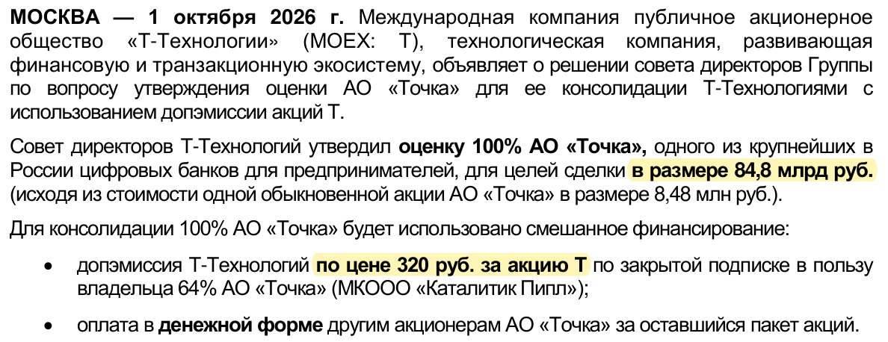
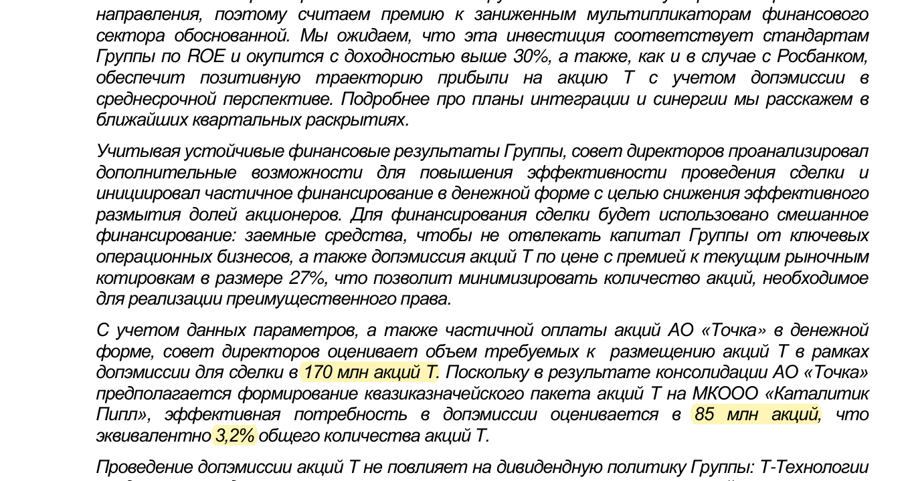
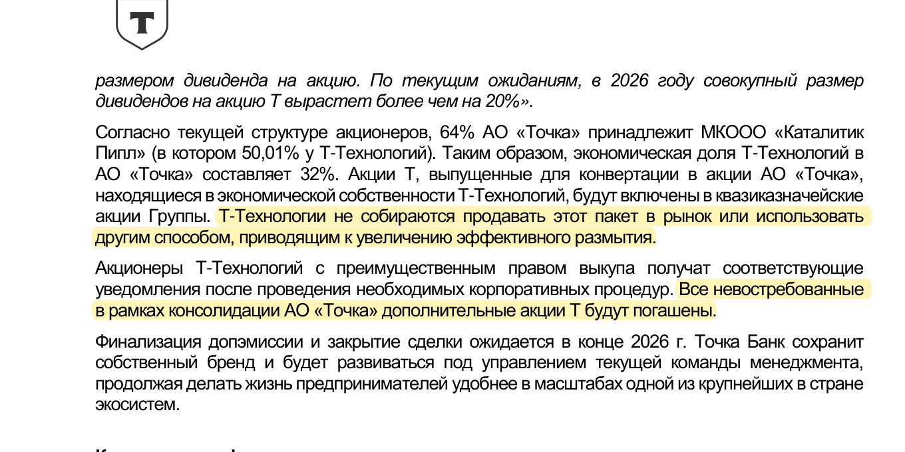
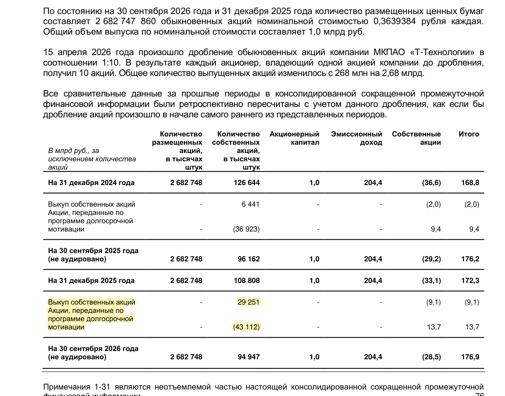

Утром 10 ноября президент Т-Технологий Станислав Близнюк предъявил рынку сильный квартал: 63,6 млрд рублей операционной чистой прибыли, рост на 41% год к году, рентабельность капитала 32,3% и рекомендованный дивиденд 4,8 рубля на акцию.
Эти цифры удобны для заголовка. Но в корпоративной истории важнее другое число — 85 миллионов акций. Именно столько новых бумаг, по оценке совета директоров, станет реальным увеличением знаменателя после покупки Точки.
А дальше начинается почти производственный детектив. В нём есть председатель совета директоров Алексей Малиновский, основатель «Интерроса» Владимир Потанин, генеральный директор «Интерроса» Сергей Батехин, глава Точки Андрей Завадских и пакет акций, который одновременно выпускается, возвращается внутрь группы и всё же частично меняет владельца.
Действующие лица
Станислав Близнюк, президент Т-Технологий, отвечает за сегодняшний результат: прибыль, рентабельность и повышенный прогноз.
Алексей Малиновский, председатель совета директоров, публично защищает цену Точки и утверждает, что инвестиция должна окупиться с доходностью выше 30%. Его подпись стоит под главной конструкцией сделки: 170 млн новых акций юридически и около 85 млн экономически.
Андрей Завадских, генеральный директор Точки, ещё в феврале говорил, что смена акционеров не должна повлиять на клиентов, а компания сохранит операционную независимость.
Сергей Батехин, генеральный директор «Интерроса», приветствовал вхождение Точки в экосистему Т-Технологий и говорил о новых сервисах для предпринимателей.
Владимир Потанин лично условий сделки публично не комментировал. Но созданный им «Интеррос» присутствует в этой истории сразу в нескольких качествах: как совладелец «Каталитик Пипл», как прямой владелец 25% Точки и как один из ключевых акционеров самих Т-Технологий. Приписывать Потанину личное решение нельзя, но игнорировать контур его группы тоже невозможно.
Документ № 1: цена и способ оплаты
Т-Технологии оценили 100% Точки в 84,8 млрд рублей. 64% банка покупаются за новые акции Т-Технологий по цене 320 рублей. Остальные 36% оплачиваются деньгами, для чего компания намерена использовать заёмные средства.

64% от 84,8 млрд — это 54,272 млрд рублей. Если разделить эту сумму на 320 рублей, получится 169,6 млн новых акций. Округлённо — 170 млн.
Денежная часть — ещё 30,528 млрд рублей. Она не увеличивает число акций, зато создаёт проценты по долгу. Поэтому у сделки два счётчика риска: сколько прибавится бумаг и сколько будет стоить финансирование.
Кому достанутся новые акции
Все 170 млн бумаг получает МКООО «Каталитик Пипл» — владелец 64% Точки. В самой «Каталитик Пипл» Т-Технологиям принадлежит 50,01%, «Интерросу» — 49,99%.
Экономически пакет делится почти пополам:
- около 85 млн акций приходятся на долю самих Т-Технологий и становятся квазиказначейскими;
- примерно такая же экономическая доля приходится на партнёра по СП — «Интеррос».
Это не означает, что на счёт Владимира Потанина лично зачислят 85 млн акций. Юридическим владельцем будет «Каталитик Пипл». Но экономический интерес внешнего партнёра в этой половине пакета очевиден из структуры владения.
Если после апрельской сделки структура оставшихся 36% не менялась, денежную оплату должны получить прямой владелец 25% Точки «Интеррос» и владелец 11% — фирма «1С». Публичных сообщений о другой структуре мы не нашли.
Документ № 2: как 170 миллионов превращаются в 85
Компания прямо пишет: юридически для сделки требуется 170 млн акций, но из-за появления квазиказначейского пакета эффективная потребность оценивается в 85 млн, или 3,2% нынешнего капитала.

Обе цифры верны, но отвечают на разные вопросы:
- 170 млн — сколько акций выпускается по механике обмена;
- 85 млн — насколько, по оценке компании, вырастет эффективный пакет внешних владельцев.
Т-Технологии обещают не продавать квазиказначейскую половину на рынок и не использовать её способом, который увеличит эффективное размытие. Невостребованные дополнительные акции должны быть погашены.

Слово «обещают» здесь важно. Пакет пока не погашен. Значит, инвестору нужно проверять его движение в следующих отчётах, а не считать вопрос закрытым навсегда.
Рыночная версия № 1: «Интеррос» сидит по обе стороны стола
Происхождение версии
Аналитические публикации о структуре сделки и открытые данные об акционерах.
Что подтверждено: «Интеррос» владеет 49,99% «Каталитик Пипл», напрямую купил 25% Точки у VK и участвует в капитале Т-Технологий. Это не слух, а раскрытая структура.
В чём подозрение рынка: один и тот же финансовый контур участвует и со стороны покупателя, и среди владельцев продаваемого актива. Поэтому условия особенно важно проверять на справедливость для независимых миноритариев Т-Технологий.
Аргумент против подозрения: Алексей Малиновский сообщил, что цену определяли с помощью независимого оценщика и что его оценка справедливой стоимости была даже выше утверждённых 84,8 млрд рублей.
Чего не хватает: сам отчёт оценщика публично не показан. Поэтому проверить его допущения — темпы роста, стоимость капитала и синергии — миноритарий пока не может.
Рыночная версия № 2: из Точки вынули дивиденды, а цена осталась прежней
Эту версию публично сформулировал аналитический автор Алексей Рыбаков. Его расчёт строится так: в апреле «Интеррос» купил у VK 25% Точки по цене, соответствующей оценке всего банка в 84,8 млрд рублей. Позже из Точки, по оценке автора, могли выплатить около 20 млрд рублей дивидендов, но осенняя цена всего бизнеса осталась прежней.
Если расчёт верен, актив стал легче на величину выплат, а покупателю предъявили старый ценник. Тогда возможная переплата могла составить несколько миллиардов рублей.
Что говорит за неё: одинаковая оценка в апреле и октябре; в опубликованной отчётности действительно нужно искать движение дивидендов и капитала Точки.
Что говорит против: цена бизнеса определяется не только деньгами на балансе. За полгода могли измениться прибыль, клиентская база, прогнозы и ожидаемая синергия. Совет директоров утверждает, что независимая оценка была выше согласованной цены.
Кому версия выгодна: критикам сделки и миноритариям, требующим большего раскрытия.
Когда проверим: после публикации годовой отчётности Точки и первого раскрытия результатов сделки. Нужны фактические дивиденды, капитал на дату закрытия и расчёт признанного гудвила.
Рыночная версия № 3: байбэк специально подстилает ковёр под сделку
В Пульсе уже появилась простая формула: допэмиссия даёт 3,2%, байбэк составляет до 5%, следовательно, размытия нет.
Официальные документы рассказывают другую историю. Алексей Малиновский называет целью выкупа формирование резерва для долгосрочной мотивации менеджмента. За девять месяцев компания выкупила 29,251 млн акций, но передала по программе мотивации 43,112 млн.

Байбэк способен поддерживать спрос и позволяет не проводить отдельную эмиссию ради вознаграждения менеджеров. Но если акции потом передаются сотрудникам, они возвращаются в экономический оборот. Пока бумаги не погашены, вычитать 5% из 3,2% нельзя.
Версия о том, что выкуп одновременно создаёт комфортный фон для крупной сделки, возможна как рыночная гипотеза, но доказательств специального поддержания цены у нас нет. Подтверждённая цель программы — мотивационный резерв.
Рыночная версия № 4: самостоятельность Точки сохранится только на вывеске
Андрей Завадских и Т-Технологии обещают сохранить бренд, нынешнюю команду и операционную самостоятельность Точки. Это логично: предприниматели ценят её отдельную культуру, а попытка быстро растворить банк внутри большой группы может уничтожить часть стоимости.
Но после консолидации 100% стратегический контроль всё равно окажется у Т-Технологий. Поэтому рынок будет следить, кто реально определяет кредитную политику, продукты, бюджеты и обмен клиентскими данными.
Пока версия о «скрытом поглощении культуры» имеет низкую надёжность. Ближайшая проверка — окончательный план интеграции. В отчётности на 30 сентября компания прямо признала, что такой план ещё разрабатывается.
Что это означает для владельца 1 000 акций
Ваши 1 000 акций не превратятся в 968. Они останутся у вас. Но весь пирог станет немного больше, поэтому доля старого владельца уменьшится.
Если общая прибыль не изменится, эффективное увеличение числа акций на 3,2% снизит прибыль на одну акцию примерно на 3,1%.
Чтобы старый акционер не проиграл, Точка должна добавить группе больше 3,2% прибыли. Сверх этого новый бизнес должен покрыть проценты по долгу на денежную часть сделки.
Инвестиционный банкир Евгений Коган видит положительный эффект в объединении клиентских баз и экспертизы в кредитном и комиссионном бизнесе. Аналитик БКС Артём Перминов также считает оценку относительно справедливой, но отдельно подчёркивает: квазиказначейский пакет нейтрален именно потому, что он не погашен. Это важная оговорка, которую оптимистичные пересказы часто теряют.
А дивиденд 4,8 рубля — компенсация?
Нет. Дивиденд приятен владельцу, но его получают все акционеры, а деньги после выплаты уходят из капитала компании. Он не является отдельной компенсацией старым владельцам за увеличение числа акций.
Рекомендация 4,8 рубля подтверждает способность группы зарабатывать сейчас. Качество сделки проверит не ближайший дивиденд, а будущая прибыль на одну акцию.
Три сценария
Удачный
Андрей Завадских сохраняет сильную команду Точки, клиентам предлагают больше кредитных и платёжных продуктов, а синергия перекрывает 3,2% нового знаменателя и стоимость долга. Тогда обещанная Алексеем Малиновским положительная траектория EPS становится фактом.
Нейтральный
Группа растёт, но почти весь прирост съедают новые акции, проценты и расходы на интеграцию. Т-Технологии становятся больше, а владелец одной акции почти не становится богаче.
Неудачный
Интеграция затягивается, самостоятельная культура Точки слабеет, кредит обходится дорого, а синергия остаётся презентацией. Тогда общая прибыль может выглядеть внушительно, но EPS отстанет от прежней траектории.
Что делать простому держателю
Оставить позицию можно, если Т-Технологии занимают умеренную долю портфеля и вы готовы дождаться фактического закрытия сделки и первой объединённой отчётности.
Сократить долю разумно, если одна бумага стала слишком большой частью портфеля или вас беспокоит концентрация сделок с контуром крупного акционера. Это не прогноз падения, а управление риском.
Не докупать только из-за 4,8 рубля. Сначала нужно увидеть фактическое число размещённых и погашенных акций, движение квазиказначейского пакета, цену долга и вклад Точки в EPS.
Семь проверок для продолжения расследования
- Сколько новых акций фактически разместили и сколько погасили.
- Что стало с квазиказначейским пакетом около 85 млн бумаг.
- Изменился ли экономический пакет «Интерроса» в Т-Технологиях.
- Сколько денег и по какой ставке заняли для оплаты оставшихся 36%.
- Сколько дивидендов Точка действительно выплатила после апрельской оценки.
- Какой гудвил появится при консолидации и что покажет оценка приобретённых активов.
- Растёт ли прибыль на одну акцию, а не только общая прибыль группы.
Ранее мы уже разбирали другую сделку Т-Технологий в расследовании «ЦИАН: 50% не сходятся». Там спор шёл о пакете, необходимом для контроля. Здесь — о том, какая часть новых акций действительно ляжет на прибыль группы и кому достанется экономический эффект.
Факты основаны на официальных условиях сделки, отчётности Т-Технологий и заявлениях участников. Версии о возможной переплате, поддержке котировок и будущей самостоятельности Точки обозначены как версии и не выдаются за установленные события. Материал не является индивидуальной инвестиционной рекомендацией.